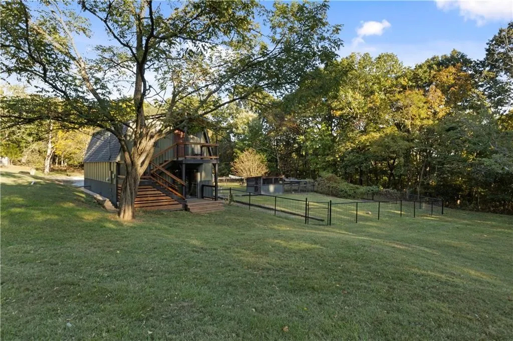
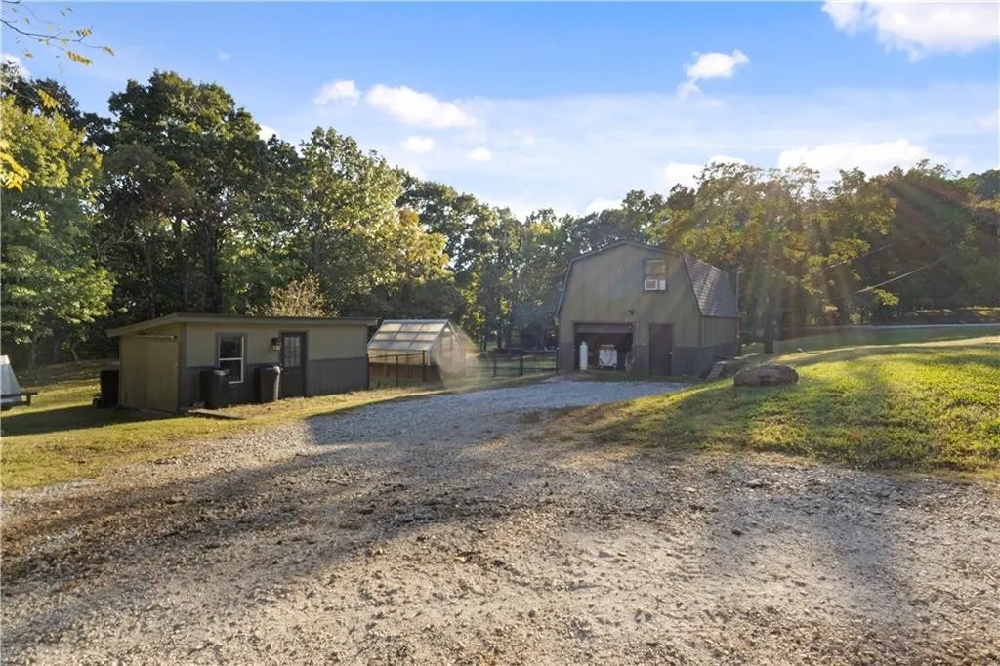
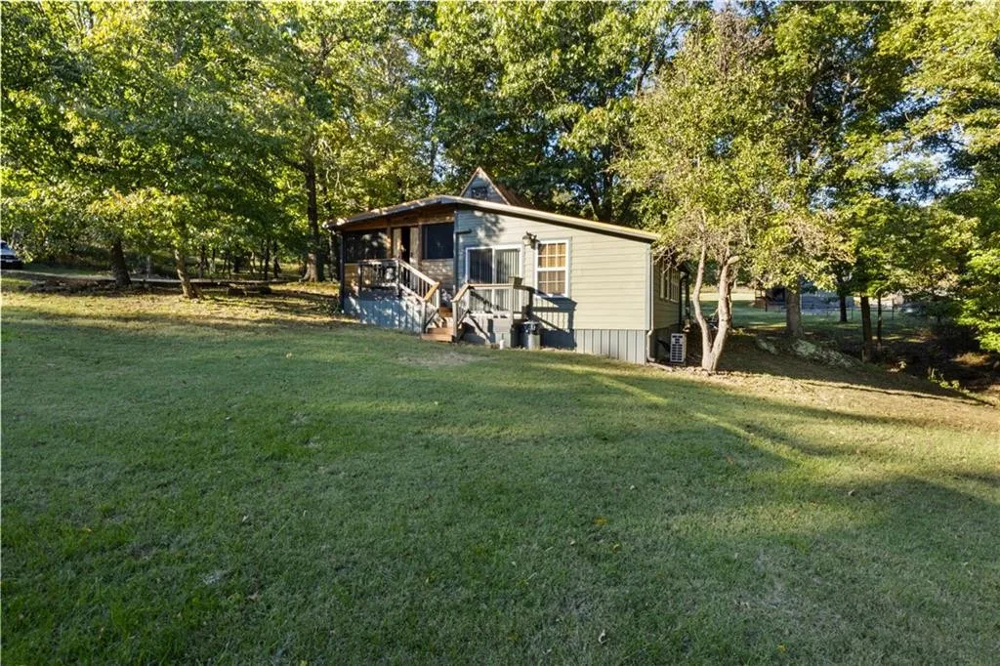
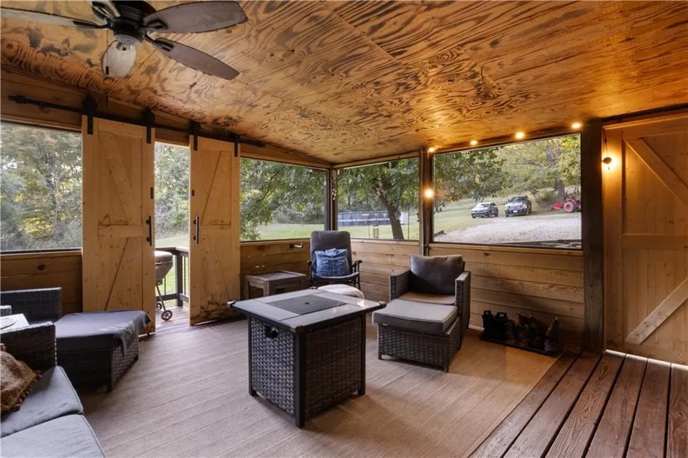
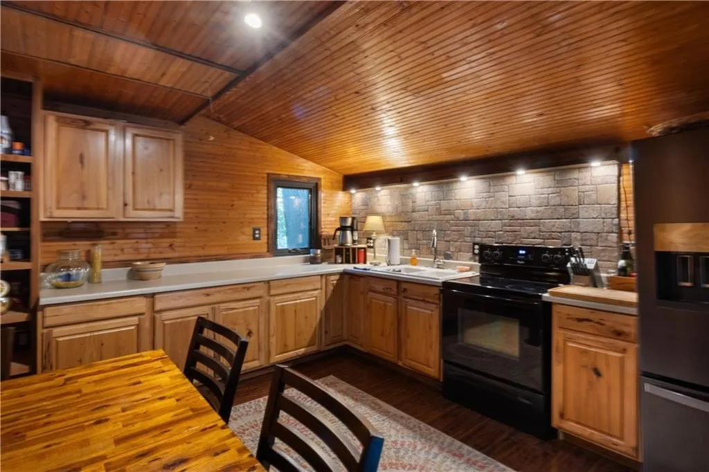
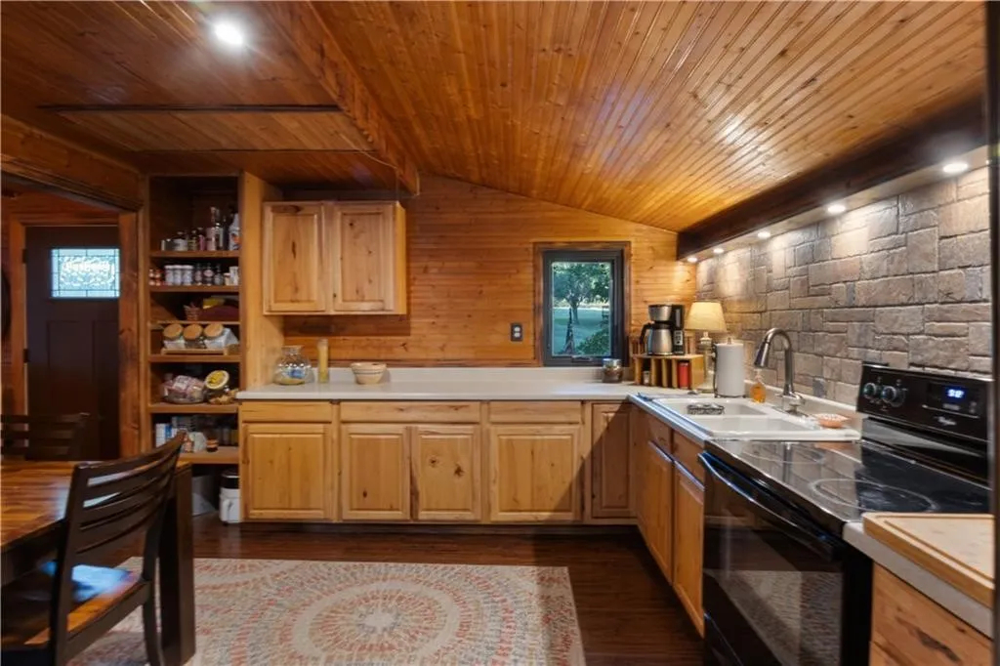
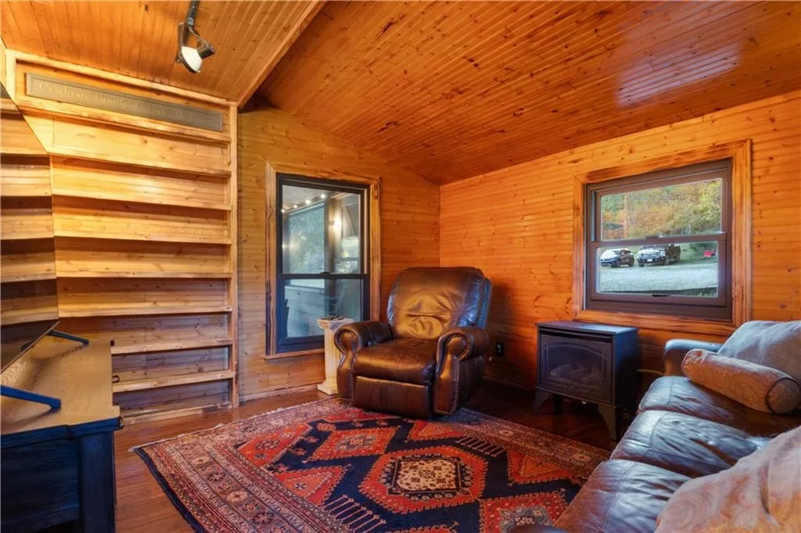
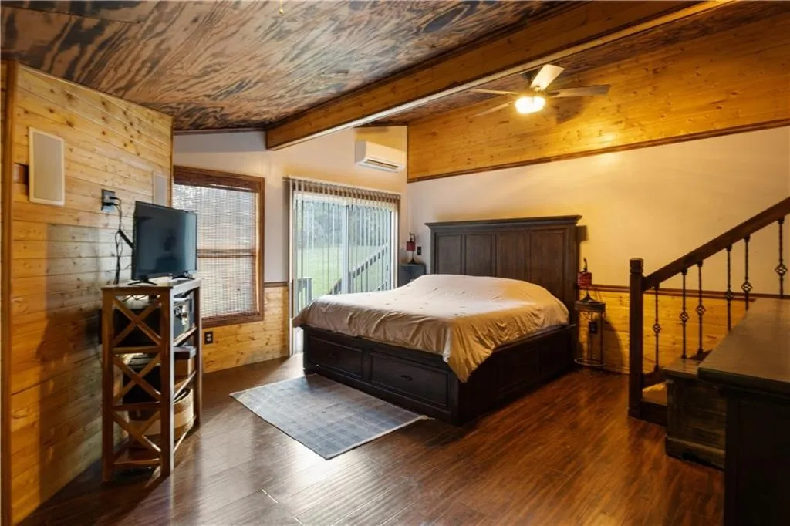
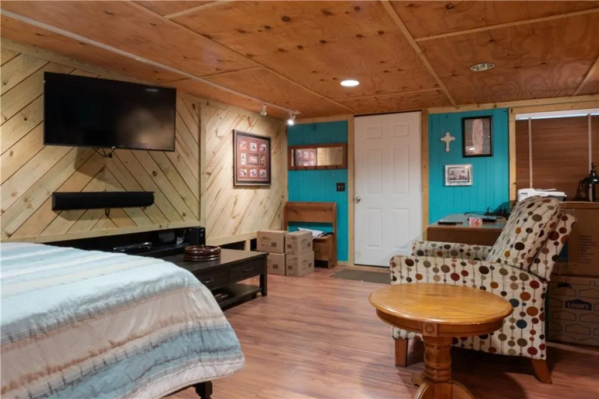

Sugar Mountain
1 bed, 1 bath home (1,386 sq ft) set in a private, quiet location where the true value lies in the land and improvements.
Property includes a detached guest house with shop, offering strong potential for Airbnb, rental income, workspace, or extended living. Additional features include a greenhouse, chicken coop, and large fenced garden area ready for homesteading or hobby use.
A four-season screened porch provides additional living space and is not included in the recorded square footage. Just beyond, a fire pit sits beside a wet-weather creek, creating a natural gathering area surrounded by mature trees and rolling terrain.
Secluded, usable, and comfortable as it sits — suited for full-time living, weekend retreat use, or income potential.
Offered AS-IS and listed below recent appraisal.
3% offered to buyer’s agent.













